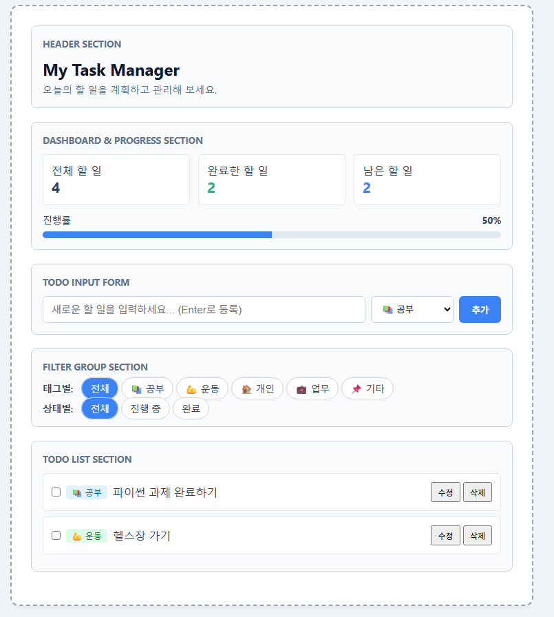
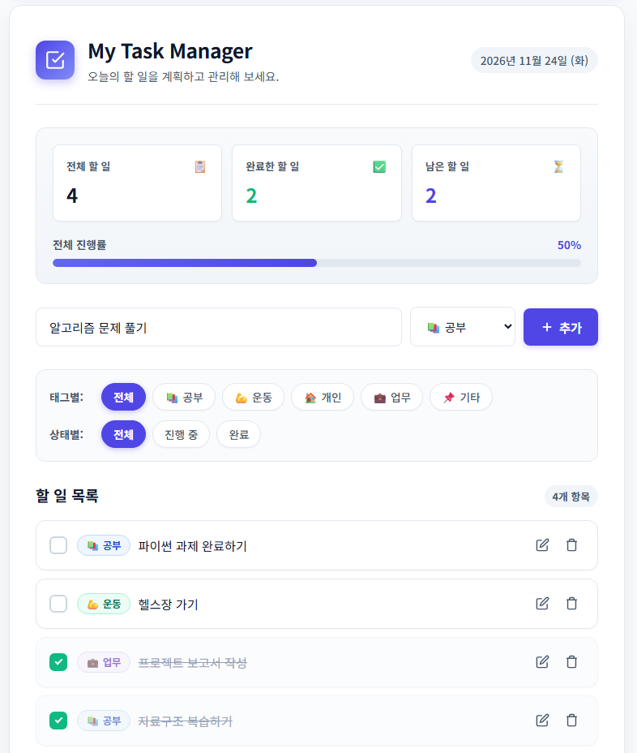
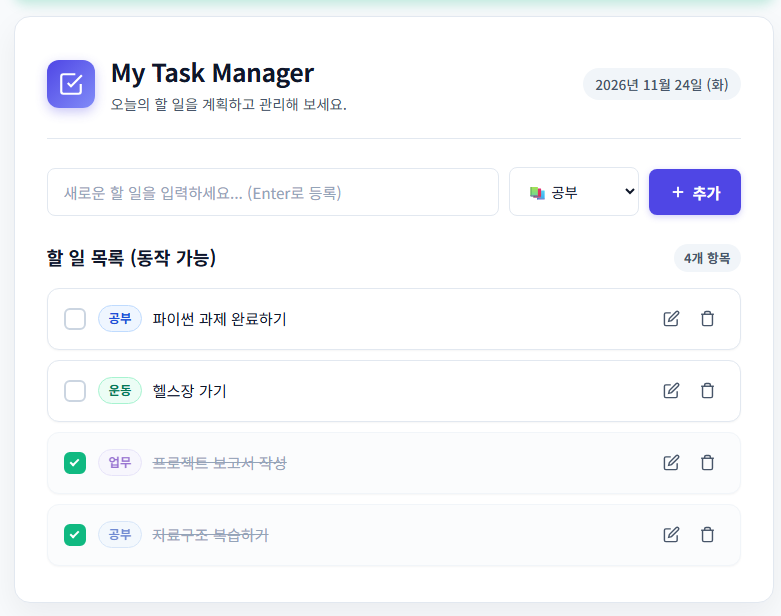
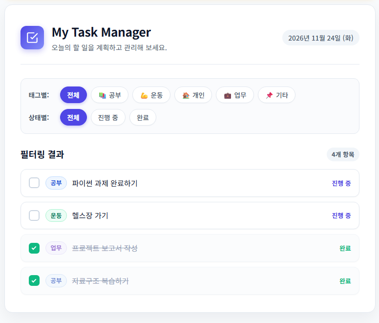
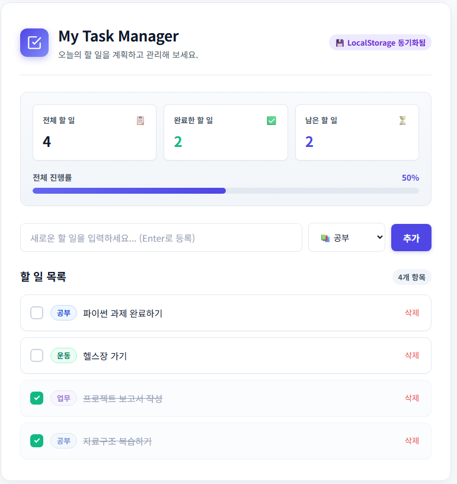
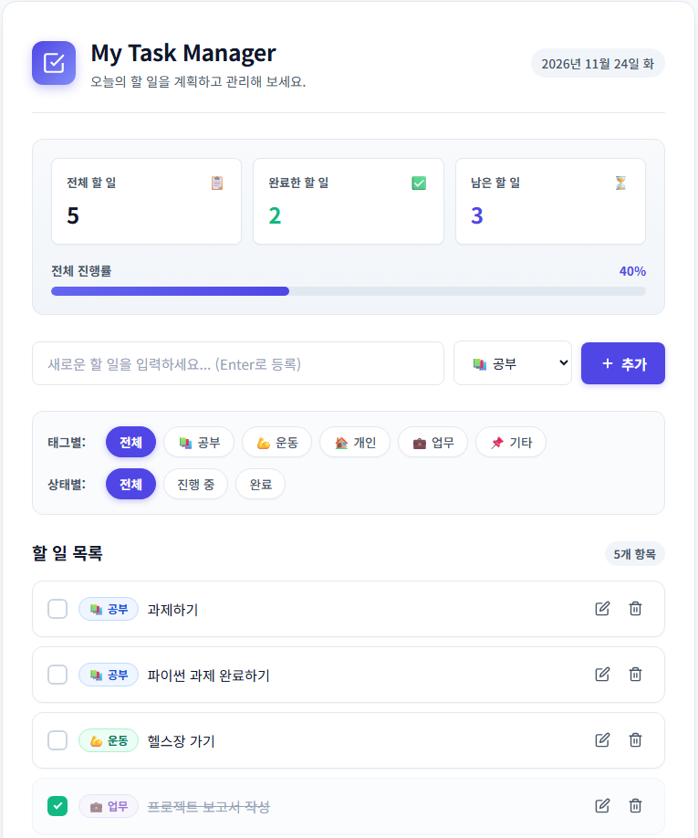

프로젝트 소개
My Task Manager
공부와 운동, 개인 일정이 한 목록에 모이면 지금 해야 할 일을 찾기 어렵습니다. My Task Manager에서는 태그로 목록을 좁히고, 남은 일부터 확인할 수 있습니다.
HTML · CSS · JavaScript · LocalStorage
여섯 화면으로 보는 개발 과정
1. 화면 구조 설계
오늘의 진행률을 먼저 보고 바로 할 일을 입력할 수 있도록, 통계와 입력창을 목록 위에 놓았습니다. 점선 안에 각 영역을 나눈 첫 설계입니다.


2. 기본 화면 디자인
설계한 영역에 통계 카드와 태그 배지를 적용했습니다. ‘알고리즘 문제 풀기’를 입력 중인 화면에서 추가 버튼과 선택된 필터를 같은 보라색으로 표시했습니다.


3. 목록에 동작 연결
Enter로 할 일을 등록하고 각 행에서 내용을 고치거나 삭제할 수 있게 했습니다. 체크한 두 항목에는 취소선을 넣어 완료 여부가 바로 보이게 했습니다.


4. 태그와 상태로 목록 좁히기
화면에는 ‘전체’가 선택되어 네 항목이 보입니다. 여기서 ‘공부’와 ‘진행 중’을 함께 선택하면 아직 끝내지 않은 파이썬 과제 한 건이 남습니다.


5. 새로고침 후에도 이어서 사용하기
할 일 내용, 태그, 완료 상태를 브라우저에 저장했습니다. 다음 방문에도 같은 목록으로 시작하고, 모두 지운 경우에는 빈 목록이 유지됩니다.


6. 남은 일이 먼저 보이는 최종 화면
재지시를 통해 진행 중인 일을 위에 모았습니다. ‘과제하기’를 추가한 최종 화면에서는 전체 5개 중 2개를 마쳐 진행률이 40%이고, 남은 일 3개가 목록 위에 보입니다.


재지시와 회고
“체크박스를 클릭해 완료 상태가 변경되면 목록 순서도 즉시 갱신해 주세요.”정렬 개선을 요청한 프롬프트 중
처음 만든 앱에서 완료된 일과 남은 일이 섞여 있어 다음 할 일을 찾기 불편했습니다. 그래서 미완료 항목은 위에, 완료 항목은 아래에 두고, 같은 상태 안에서는 기존 순서를 유지하도록 요청했습니다. 태그로 목록을 좁힌 뒤에도 같은 규칙을 적용했습니다.
이번 작업에서 가장 도움이 된 것은 요구사항을 단계별로 나누고 각 단계에서 보일 결과를 예시로 적는 일이었습니다. 특히 정렬을 고칠 때는 어느 항목이 어떤 동작 뒤에 어디로 이동해야 하는지까지 적으니 결과를 직접 확인할 수 있었습니다.
할 일 관리 앱 실행